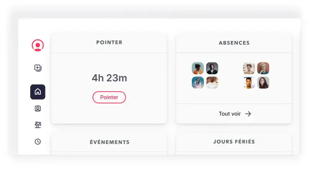

- SIRH tout-en-un complet et modulaire
- Interface intuitive, prise en main rapide
- Essai gratuit 14 jours sans CB
- IA intégrée (Factorial One)
- Excellent rapport qualité/prix
- Paie française non native
- Support client parfois lent
- Reporting limité sur plans de base
- Bugs occasionnels après mises à jour
- Limité au-delà de 1 500 salariés
Factorial, c'est quoi ?
On va être direct : si vous cherchez un SIRH qui fait tout (ou presque) sans vous ruiner, Factorial mérite sérieusement votre attention. Fondé en 2016 à Barcelone par Jordi Romero, Bernat Farrero et Pau Ramon Revilla, ce logiciel a été pensé dès le départ pour les PME qui n'ont ni le budget ni la patience de jongler entre 5 outils différents. Et visiblement, ça a marché.
Les chiffres parlent d'eux-mêmes : licorne depuis 2022 (levée de 120 millions en série C, valorisation à 1 milliard), environ 1 300 collaborateurs, plus de 12 000 entreprises clientes dans 95 pays. Ce n'est plus une startup, c'est un acteur sérieux du marché.
Mais concrètement, qu'est-ce qui le distingue de PayFit ? C'est simple : PayFit fait la paie, Factorial fait tout le reste. Gestion des employés, congés, pointage, planification des shifts, recrutement avec un vrai ATS intégré, performance (entretiens, OKR, évaluations 360), notes de frais, onboarding, signature électronique... et même un assistant IA baptisé Factorial One lancé en 2025. On y reviendra, mais c'est clairement un plus.
En France, Factorial s'est fait une vraie place. Son argument massue face à Lucca ou Personio ? Le prix. À partir de 5,75 € par utilisateur et par mois, vous avez un SIRH complet là où d'autres facturent le double. Le hic, et c'est important, c'est la paie : Factorial prépare les variables mais ne produit pas les bulletins français. Il faut passer par Silae ou votre cabinet comptable. Si la paie est votre priorité numéro un, ce n'est pas le bon outil.
Bon, avant de rentrer dans le détail, voici ce qu'il faut retenir :
- SIRH tout-en-un : RH, temps, recrutement, performance, notes de frais et paie préparée dans un seul outil
- Interface moderne et intuitive : prise en main en quelques heures, sans formation spécifique
- 12 000+ entreprises clientes dans 95 pays, licorne européenne valorisée à 1 milliard de dollars
- IA intégrée : Factorial One génère des rapports, répond aux questions et automatise les tâches répétitives
- Paie française non native : préparation des variables uniquement, export vers Silae ou cabinet comptable nécessaire
- Essai gratuit 14 jours : sans engagement ni carte bancaire, sur toutes les offres
Fonctionnalités de Factorial : le détail complet
On a testé Factorial en profondeur, et franchement, pour le prix, c'est impressionnant. Là où PayFit brille sur la paie mais reste limité côté RH, Factorial couvre un terrain beaucoup plus large. Voici le détail module par module.
| Fonctionnalité | Disponible | Commentaire |
|---|---|---|
| Gestion des employés (Core HR) | Oui Excellent | Portail employé, organigramme dynamique, dossiers numériques, historique complet. |
| Gestion des congés et absences | Oui Excellent | Demandes en ligne, validation managériale, soldes en temps réel, compteurs personnalisables. |
| Suivi du temps et pointage | Oui | Pointage web et mobile, géolocalisation, heures supplémentaires automatiques, conformité légale. |
| Planification des shifts | Oui | Plannings visuels, rotation automatique, notification des équipes, gestion des remplacements. |
| Recrutement (ATS) | Oui Solide | Offres d'emploi, tri des candidatures, pipeline visuel, scoring IA des CV. |
| Performance et entretiens | Oui | Entretiens annuels, objectifs OKR, évaluations 360, suivi des compétences. |
| Notes de frais | Oui | Scan de justificatifs, validation hiérarchique, export comptable automatisé. |
| Onboarding salarié | Oui | Parcours personnalisable, signature électronique, collecte des documents pré-embauche. |
| Signature électronique | Oui | Signature illimitée, conforme eIDAS, intégrée au dossier salarié. |
| Documents et GED | Oui | Stockage cloud sécurisé, modèles personnalisables, accès par rôles, RGPD. |
| Reporting et analytics | Partiel | Rapports pré-configurés solides. Rapports personnalisés avancés en plan Enterprise uniquement. |
| IA (Factorial One) | Oui | Assistant IA pour questions RH, génération de rapports, modèles documentaires automatisés. |
| Paie française (bulletins, DSN) | Non | Préparation des variables de paie uniquement. Export vers Silae ou cabinet comptable nécessaire. |
| App mobile | Oui | iOS et Android, pointage, congés, documents. Fonctionnalités réduites vs desktop. |
| API ouverte | Oui | API REST. Intégrations Slack, Teams, Google Workspace, Zapier, Silae. |
Le Core HR, c'est la base, et elle est solide. Dossiers employés complets, organigramme qui se génère tout seul, historique des postes... Le portail libre-service fait gagner un temps fou : chaque salarié gère ses congés, ses documents et ses infos perso sans déranger les RH. Pour une PME qui n'a pas d'assistante RH dédiée, c'est un vrai soulagement.
Le recrutement est un gros plus par rapport à PayFit (qui n'en propose tout simplement pas). L'ATS intégré permet de publier des offres, trier les candidatures avec un pipeline visuel, et depuis 2025, l'IA score automatiquement les CV. Honnêtement, pour une PME qui recrute 5 à 20 personnes par an, ça évite de payer un Indeed ou un Workable à côté.
Côté performance, c'est aussi bien fait. Campagnes d'entretiens annuels, objectifs OKR, évaluations 360, 1-on-1 entre managers et collaborateurs... Ça remplace avantageusement un Elevo ou un Javelo, sans coût supplémentaire.
Maintenant, le point qui fâche : la paie française. Factorial prépare les variables (heures, absences, primes, notes de frais) mais ne produit pas les bulletins. Il faut exporter vers Silae ou votre cabinet comptable. C'est un vrai compromis, et le principal frein pour beaucoup d'entreprises françaises. La paie native existe en Espagne et au Portugal, mais pas chez nous. Pas encore, en tout cas.
Tarifs Factorial 2026 : combien ça coûte vraiment ?
Parlons argent, parce que c'est souvent là que ça se joue. Et c'est justement sur le prix que Factorial marque des points. La tarification est modulaire : trois offres principales, version Business ou Enterprise, et vous ne payez que ce dont vous avez besoin.
| Offre | Prix / salarié / mois (HT) | Inclus |
|---|---|---|
| Core HR + Time Hub | 5,75 € | SIRH, portail salarié, congés, pointage, plannings, documents |
| Core HR + Talent Hub | 5,75 € | SIRH, portail salarié, recrutement (ATS), performance, onboarding |
| Complete Bundle | 8 - 9 € | Tous les modules : Time + Talent + Core HR + notes de frais + paie préparée |
| Enterprise | Sur devis | Complete + rapports personnalisés, évaluations par compétences, 1-on-1, SLA garanti |
OK, mais concrètement, ça donne quoi sur votre budget ?
| Nombre de salariés | Time ou Talent Hub | Complete Bundle | PayFit (comparaison) |
|---|---|---|---|
| 10 salariés | 58 € / mois | 80 - 90 € / mois | 89 - 109 € / mois |
| 20 salariés | 115 € / mois | 160 - 180 € / mois | 149 - 189 € / mois |
| 50 salariés | 288 € / mois | 400 - 450 € / mois | 329 - 429 € / mois |
En clair, pour des fonctionnalités comparables (recrutement, performance, temps, congés), Factorial revient souvent moins cher que Lucca, dont chaque module est facturé séparément (et l'addition monte vite), et que Personio qui vise un positionnement plus premium. Après, si votre seul vrai besoin c'est la paie automatisée, PayFit reste plus logique car il inclut les bulletins dans le tarif.
Les 5 points forts de Factorial
1. Un SIRH tout-en-un véritablement complet
C'est LE gros argument de Factorial. Un seul outil pour tout gérer : recrutement, onboarding, congés, pointage, entretiens de performance, objectifs, notes de frais et préparation de la paie. Quand on compare avec PayFit qui ne fait ni recrutement ni GPEC, la différence est nette.
Pour une PME de 20 à 200 salariés qui en a marre de jongler entre Excel, un Google Form pour les congés et un tableau blanc pour les entretiens, c'est clairement libérateur.
2. Une interface intuitive et moderne
On ne va pas se mentir : beaucoup de logiciels RH ont des interfaces datées et peu agréables. Factorial, c'est l'inverse. L'interface est claire, épurée, et on comprend comment ça marche en 10 minutes. Pas besoin de formation.
Les avis utilisateurs sur Capterra et G2 confirment : 4,5/5 en facilité d'utilisation. La courbe d'apprentissage est nettement plus courte que Lucca ou Cegid. Et le portail libre-service fait que vos salariés gèrent eux-mêmes leurs congés et documents, ce qui réduit les sollicitations pour les RH.

3. Un essai gratuit de 14 jours sans engagement
C'est rare dans le monde du SIRH, et c'est appréciable : 14 jours d'essai gratuit, sans carte bancaire, sans engagement, sans devoir passer par un commercial. Vous testez tout (congés, pointage, recrutement, performance) avec vos vraies données.
Quand on sait que PayFit, Lucca et Personio exigent tous une démo commerciale avant de vous laisser toucher à l'outil... c'est un vrai avantage. Mon conseil : si vous hésitez entre plusieurs solutions, commencez par Factorial justement parce que vous pouvez le tester sans engagement.
4. L'IA intégrée avec Factorial One
Lancé en 2025, Factorial One est un assistant IA intégré directement dans la plateforme. Concrètement, un manager peut demander « Quel est le taux d'absentéisme de mon équipe ce trimestre ? » et obtenir une réponse instantanée avec un graphique. Il peut aussi générer des modèles de documents RH à partir des données de l'entreprise.
Est-ce que ça révolutionne le quotidien ? Pas encore totalement. Mais ça montre que Factorial investit dans l'innovation, et c'est un vrai avantage par rapport à PayFit ou Lucca qui n'ont rien d'équivalent à ce jour.
5. Un excellent rapport qualité/prix pour les PME
5,75 € par salarié par mois, c'est difficile à battre pour un SIRH de cette qualité. À ce prix, vous avez le portail employé, les congés, le pointage ou le recrutement. Le Complete Bundle à 8-9 € donne accès à tout.
Pour mettre les choses en perspective : Lucca facture chaque module séparément (Timmi Absences, Pagga, Poplee...) et la note grimpe vite au-delà de 10 € par salarié. Pour une PME en croissance qui veut structurer ses RH sans exploser son budget, Factorial est probablement le meilleur rapport qualité/prix du marché en 2026.
Les 5 points faibles de Factorial
1. Un support client parfois lent
C'est LE reproche qui revient le plus dans les avis. Et c'est mérité. Plusieurs utilisateurs rapportent des délais de réponse trop longs par chat et par email. Un commentaire sur Capterra résume bien la frustration : « il est presque impossible d'obtenir du support, les lignes ne fonctionnent pas, le chat reste sans réponse. »
Le problème est classique : Factorial est passé de 70 à 12 000 clients en quelques années, et le support n'a pas suivi au même rythme. Sur les plans Enterprise, un gestionnaire de compte dédié améliore les choses, mais c'est un surcoût.
2. Un reporting limité sur les plans de base
Si vous aimez les tableaux de bord avancés et les analyses croisées, mauvaise nouvelle : les rapports personnalisés sont réservés aux plans Enterprise. Les rapports standards couvrent l'essentiel (absentéisme, effectifs, masse salariale), mais pour un RRH qui doit présenter des données fines au comité de direction, ça peut être frustrant. Factorial One (l'IA) compense un peu, mais ce n'est pas un vrai module de BI.
3. La paie française non native
On en a déjà parlé, mais c'est tellement important qu'il faut le répéter : Factorial ne fait pas la paie française. Il prépare les variables, point. Pour les bulletins et la DSN, il faut Silae ou votre expert-comptable. Ça crée une étape supplémentaire et un risque d'erreur au transfert. Si la paie est votre obsession, allez chez PayFit, c'est aussi simple que ça.
4. Des bugs occasionnels après les mises à jour
C'est le revers de la médaille d'un outil qui évolue vite : après certaines mises à jour, des bugs et régressions apparaissent. L'app mobile est particulièrement touchée (fonctionnalités réduites, crashs). L'équipe corrige généralement assez vite, mais quand votre DRH ne peut pas valider les congés un lundi matin à cause d'un bug... c'est pénible. Classique du SaaS en hypercroissance, mais agaçant quand même.
5. Limité au-delà de 1 500 salariés
Soyons honnêtes : Factorial est fait pour les PME, et il assume. Au-delà de 1 500 salariés, le reporting devient insuffisant, les workflows trop simples, et l'absence de GPEC poussée commence à poser problème. Si vous êtes une ETI ou un grand groupe, regardez plutôt du côté de Workday, SAP SuccessFactors ou Cegid. C'est pas le même budget, mais c'est un autre monde.
Factorial vs la concurrence : le comparatif
OK, la question que tout le monde se pose : Factorial, PayFit ou Lucca ? Voici un comparatif rapide pour y voir clair.
| Critère | Factorial | PayFit | Lucca |
|---|---|---|---|
| Type | SIRH complet | Logiciel de paie + RH basique | SIRH modulaire |
| Prix / salarié / mois | Dès 5,75 € | 6 - 9 € + forfait 29 € | Variable (modules séparés) |
| Paie française native | Non (export) | Oui (DSN incluse) | Partiel (via Pagga) |
| Recrutement (ATS) | Oui | Non | Oui (Poplee) |
| Performance / Entretiens | Oui | Non | Oui (Poplee) |
| Pointage / Temps | Oui | Non | Oui (Timmi) |
| Essai gratuit | 14 jours | Non | Non |
| IA intégrée | Oui (One) | Non | Non |
| Cible | PME 20 - 200 | TPE 1 - 50 | PME 50 - 500 |
| Note moyenne | 4,5/5 | 4,4/5 | 4,3/5 |
Notre verdict sur cette comparaison ? Factorial si vous voulez un SIRH complet et abordable. PayFit si la paie automatisée est votre priorité absolue. Lucca si vous avez un budget plus large et des besoins modulaires très spécifiques. C'est aussi simple que ça.
Pour qui Factorial est-il fait ?
Factorial ne convient pas à tout le monde, et c'est normal. Voici à qui ça correspond (et à qui ça ne correspond pas).
Vous avez un responsable RH (ou un office manager qui gère les RH), vous recrutez régulièrement, vous voulez structurer les entretiens annuels et centraliser la gestion des congés, du pointage et des documents. Factorial est l'outil idéal : tout est intégré, l'interface est simple et le prix est compétitif.
Vous n'avez pas encore de RH dédié mais vous voulez anticiper votre croissance en mettant en place des process RH structurés. Factorial est une bonne option grâce à son essai gratuit et son tarif accessible. Cependant, si votre seul besoin immédiat est la paie, PayFit sera plus adapté.
Si vous cherchez uniquement un logiciel de paie qui gère la DSN et les bulletins en natif, Factorial n'est pas le bon choix : il faudra coupler avec Silae ou un cabinet. Si vous dépassez 1 500 salariés, les fonctionnalités de reporting et de gestion des talents seront insuffisantes. Orientez-vous vers Workday, Cegid ou SAP SuccessFactors.
Notre verdict sur Factorial en 2026
Après avoir passé du temps à tester la plateforme, notre avis est sans ambiguïté : Factorial est le meilleur SIRH tout-en-un pour les PME françaises de 20 à 200 salariés en 2026. L'interface est top, les fonctionnalités couvrent 90% des besoins RH d'une PME, et le prix reste raisonnable. L'IA intégrée est un bonus appréciable, même si c'est encore jeune.
Le deal-breaker potentiel, c'est la paie. Si vous n'avez pas de solution de paie existante et que vous ne voulez pas gérer deux outils, Factorial n'est pas fait pour vous. Et le support qui traîne, c'est un vrai point d'attention, surtout quand on a un problème urgent en pleine période de clôture.
Factorial en vidéo
Demander une démo gratuite sur factorialhr.com →
Testez Factorial gratuitement pendant 14 jours
Essai gratuit, sans carte bancaire, sans engagement. Jugez par vous-même.